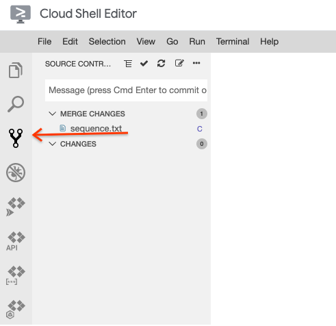
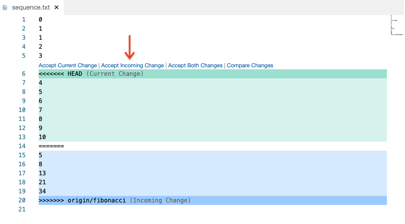

Whenever multiple people work on the same project, conflicts can arise. This is also true with version control. In this codelab, you'll create some artificial conflicts and then resolve them using the Git command line and Cloud Shell Editor.
Download a local copy of the repository the instructor has created to your development environment.
s-USER/lesson01-conflict repository and copy the "Clone with SSH" path.s-USER/lesson01-conflict repository with the git clone command.Replace the text after git clone with the path you copied from GitLab.
git clone git@techx-gitlab.640k.net:s-USER/lesson01-conflict.git
In the repository, you should see a file named "sequence.txt" containing integers 1, 2, 3.
git add sequence.txt
git commit -m 'create a sequence of natural numbers'
git push origin main
The instructor has created a branch called "fibonacci". Download this branch and check it out.
git fetch origin fibonacci
git checkout origin/fibonacci
git log
git checkout main
In the last section, you saw that the "fibonacci" branch made a different set of changes to the "sequence.txt" file than you have made. This problem can often occur when working on the same project as other people. Luckily Git provides mechanisms for identifying and resolving these conflicting changes.
git merge origin/fibonacci
You should see the following output:
Auto-merging sequence.txt CONFLICT (content): Merge conflict in sequence.txt Automatic merge failed; fix conflicts and then commit the result.
In other tutorials, you may see instructions that request you run git pull. This command combines a "fetch" and "merge" in one step.
git status
Open the version control pane in Cloud Shell Editor. 

git add sequence.txt
A command-line text editor will appear. By default " nano" is the editor. In the command list at the bottom of the editor, the caret symbol "^" indicates the "Ctrl" button.
git commit
git push origin main
If you have additional time, practice the version control skills you've learned by submitting an extra-credit coding project to a new branch of the repository used in this codelab.